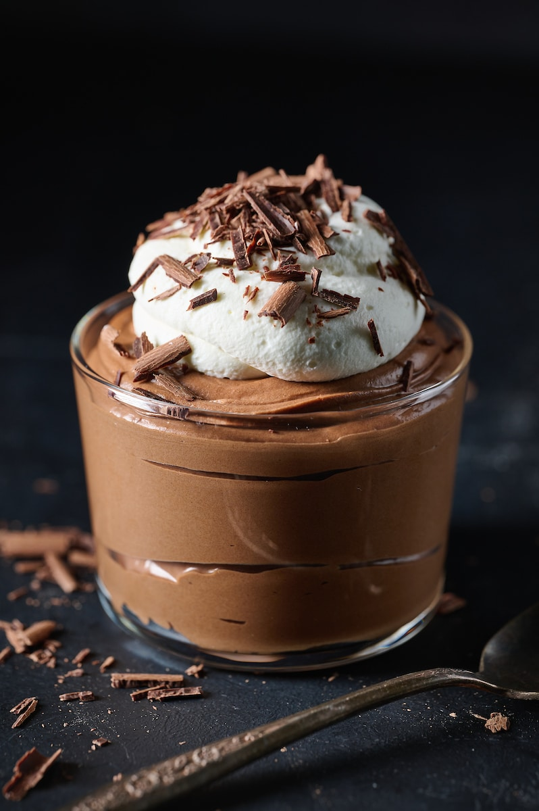

Chocolate Mousse

Intensely rich and impossibly airy chocolate mousse!
The best food is sometimes the simplest food. This most decadent chocolate mousse, with only five ingredients, is all the proof you will need! Here's how to make our favorite chocolate mousse recipe.
Ingredients
- 1/4 cup semisweet chocolate chips
- 1 tbsp water
- 1 large egg yolk, lightly beaten
- 1 1/2 tsp vanilla extract
- 1/2 cup heavy whipping cream
- 1 tbsp sugar
Steps
- In a small saucepan, melt the chocolate chips with water. Stir until smooth.
- Stir a small amount of the chocolate mixture into the egg yolk and then return the egg and chocolate back into the pan, stirring constantly. Cook and stir for two minutes or until the mixture is slightly thickened.
- Remove the pot from the heat and stir in the vanilla. Transfer teh mixture to a small bowl, stirring occasionally until completely cooled.
- In a small bowl, beat the whipping cream until it begins to thicken. Add the sugar and beat until soft peaks form.
- With a large spoon or spatula, gently fold the whipped cream into the cooled chocolate mixture.
- Cover and refrigerate for at least two hours.